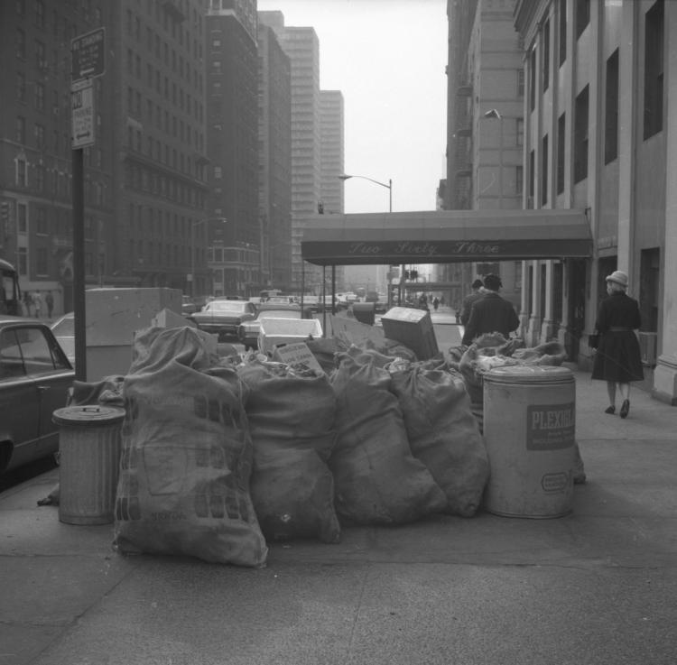
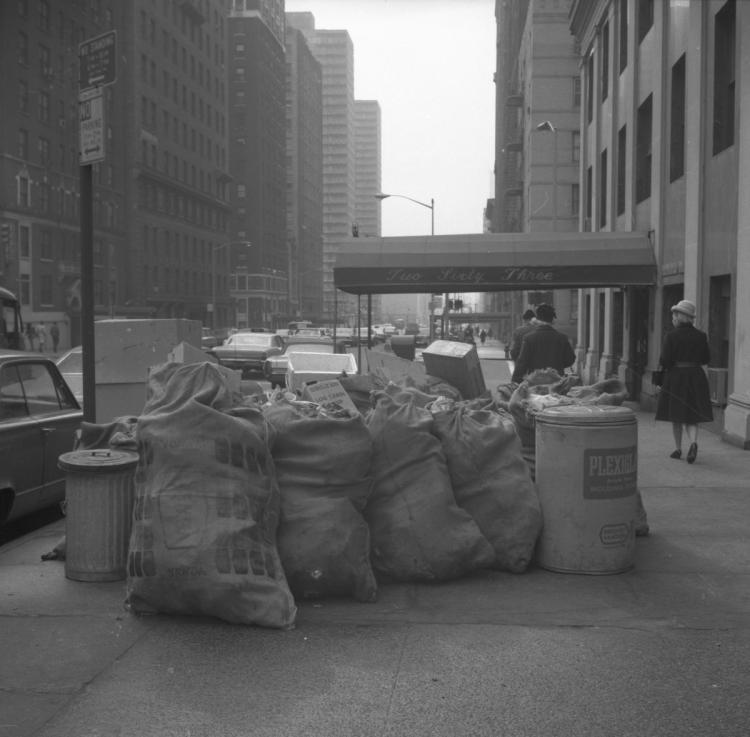
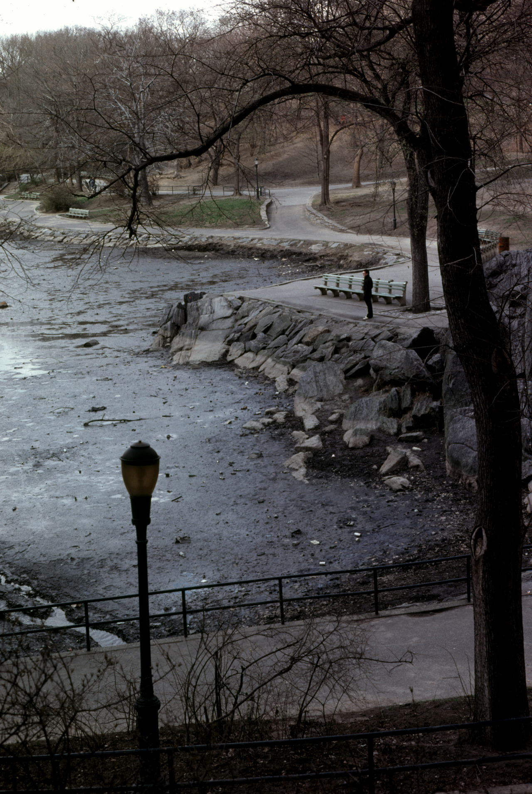
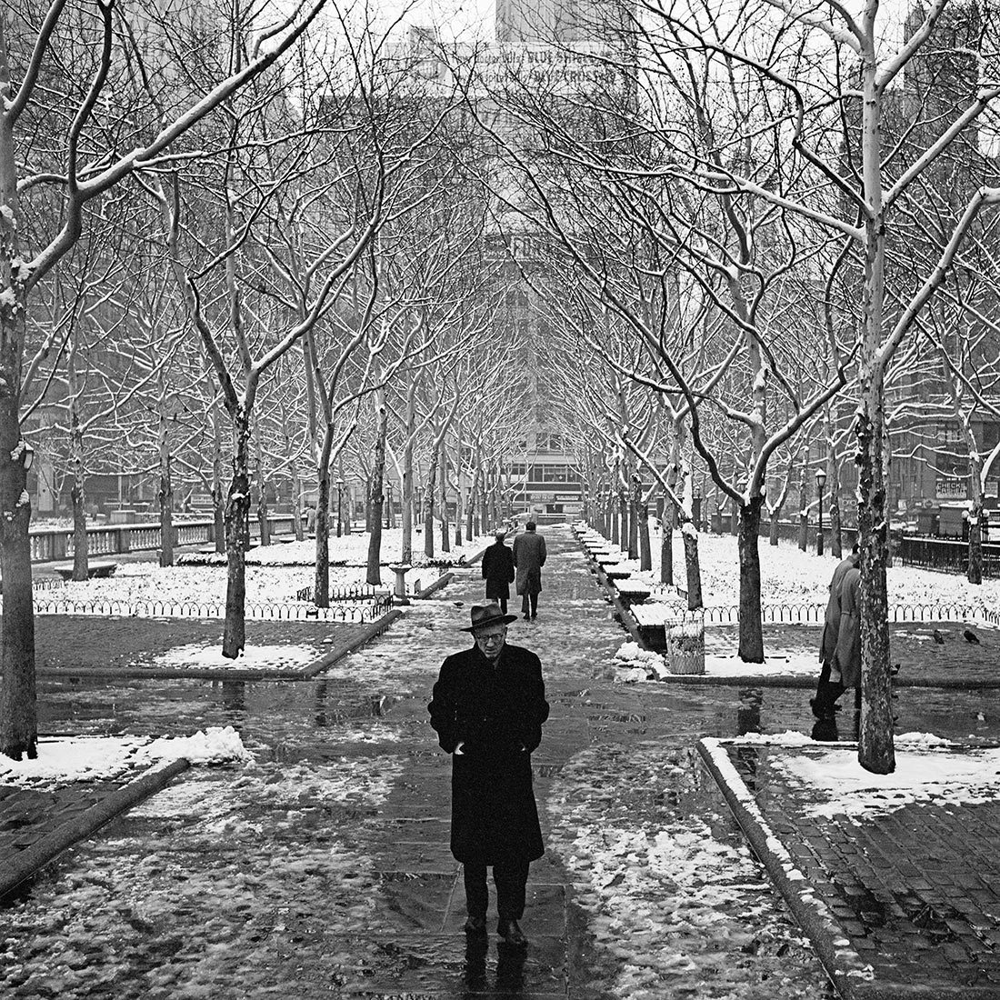

West End Ave and 72nd St, garbage strike, 1968

West End Ave and 72nd St, garbage strike, 1968

7th Avenue and Union Street, Park Slope, Brooklyn

Fordham Road / Grand Concourse, Bronx

Loew’s Valencia, 168th Street & Jamaica Ave, Queens
I was a Manhattan/Bronx kid – didn’t know much about 5pointz.
The North side of 86th Street looking East, 1980
Cycling down Park Ave in 1982
It was an ugly, dirty, dangerous, exciting, fascinating, beautiful place.
The second coming of Christ was missed by almost everyone.

Deep thoughts in Central Park, 1979
Outside the Chelsea Hotel, 1976

Washington Square Park, 1975
Santa outside Macy’s, 1975

Turtle racing in the 1970s
Bob Dylan carrying a drum in Manhattan
Keith Haring at work, 1982
Columbus Park, Chinatown, 1983
Isn’t that the photo I posted? Here’s the link, for anyone who’s interested: http://fatlacemagazine.com/2007/12/music-factory-nyc-a-retrospective/
Thanks for the kind words!
touché
1972 style

A man, his dog, and a little girl on Lexington Avenue at 83rd Street. The iconic Lexington Candy Shop is visible over the man’s right shoulder.
1950s photo by Vivian Maier.

NY 1971 - thanks to @ accomplicerex

Vivian Maier :: New York City, March 18th, 1955
more [+] by this photographer
Synagogue on White Street, 1976
New York 1973 Photo: Louis Faurer